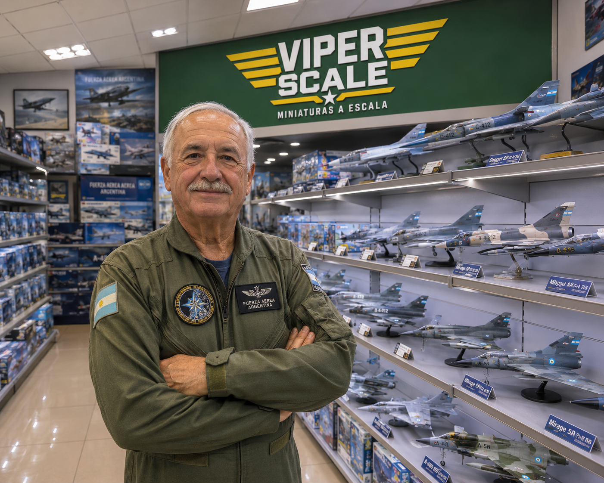
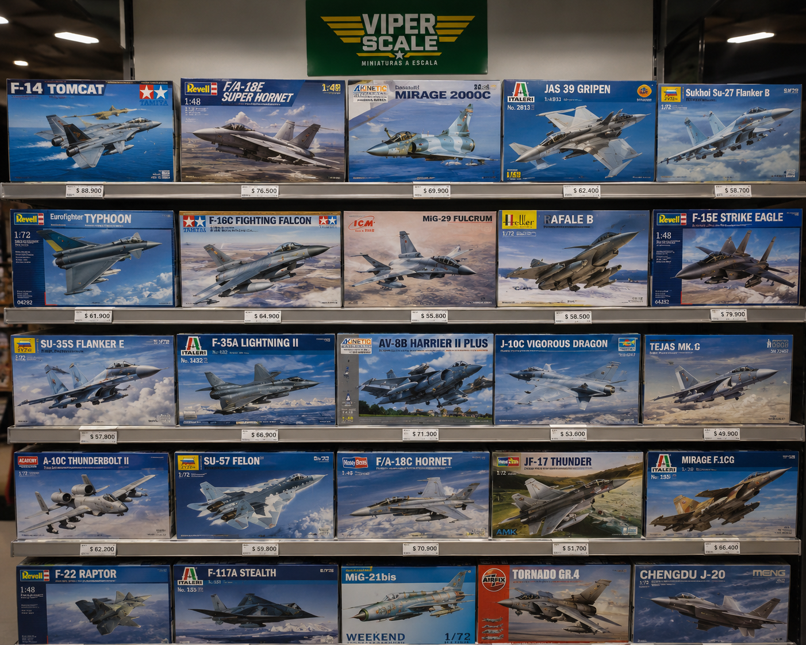

Nuestra Historia
Viper Scale nació en 2022 en el barrio porteño de Caballito, impulsada por la pasión de José Luis Gallardo, nuestro fundador y veterano de Malvinas, actual piloto retirado. El proyecto surgió cuando José tuvo una idea con sus hijos de construir un pequeño emprendimiento dedicado a brindar a los mas apasionados modelos a escala de la mayor calidad, la noticia se divulgó enseguida entre los coleccionistas y gracias a su crecimiento hoy en dia contamos con un local en Caballito.
Nos especializamos en kits a escala de aviones militares. Trabajamos directamente con las principales marcas internacionales para ofrecer los mejores precios y la más amplia variedad.

Qué Ofrecemos
En nuestro local encontrás kits de Revell, Italeri, Zvezda y Airfix en escalas 1/32, 1/48, 1/72 y 1/144, además de pegamentos, pinturas, pinceles y accesorios para armado.
Organizamos encuentros mensuales de modelistas, donde compartimos técnicas de armado, pintura y weathering. Un espacio ideal para aprender y conectarse con otros apasionados del hobby.

Visitános
Estamos en el corazón de Caballito, a pasos de la estación Primera Junta (Línea A). Atendemos de lunes a sábados con un equipo siempre dispuesto a asesorarte y ayudarte a encontrar la pieza que falta en tu colección.
- Lunes a viernes: 10:00 – 18:00
- Sábados: 10:00 – 14:00
- Domingos: Cerrado